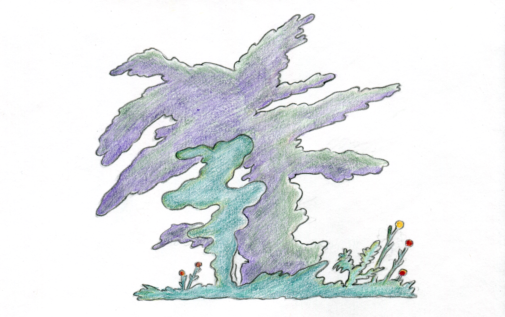
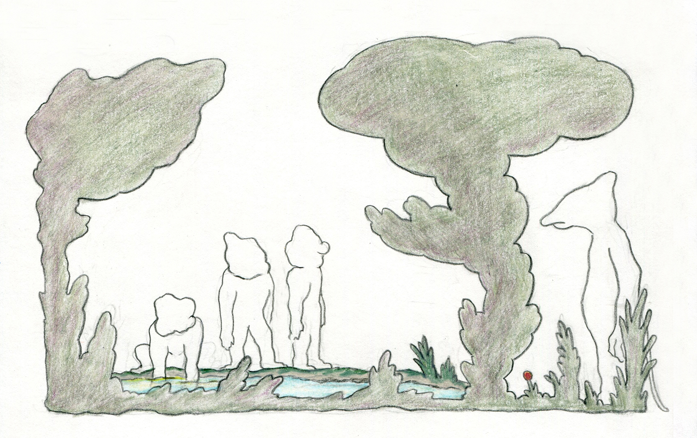
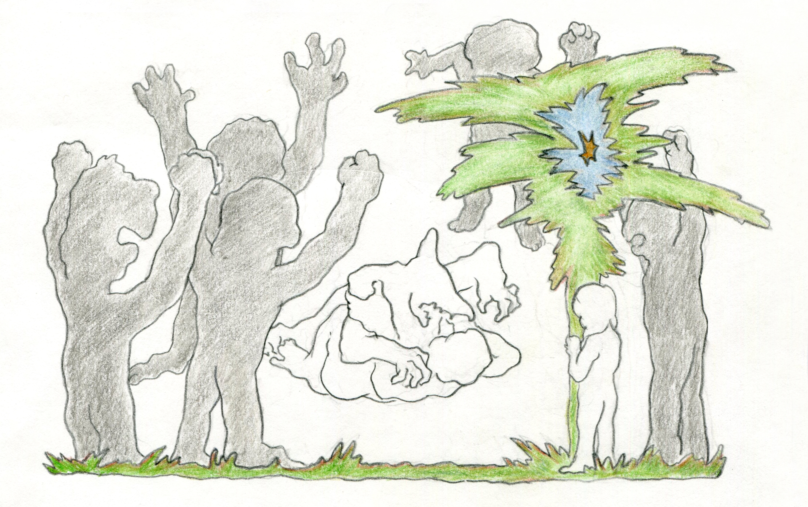
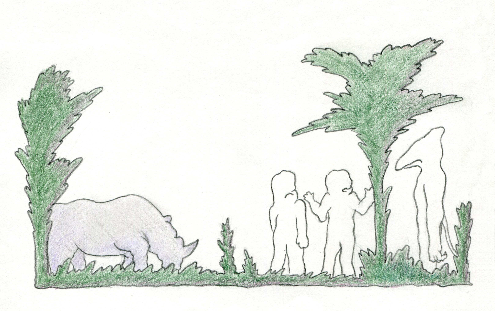
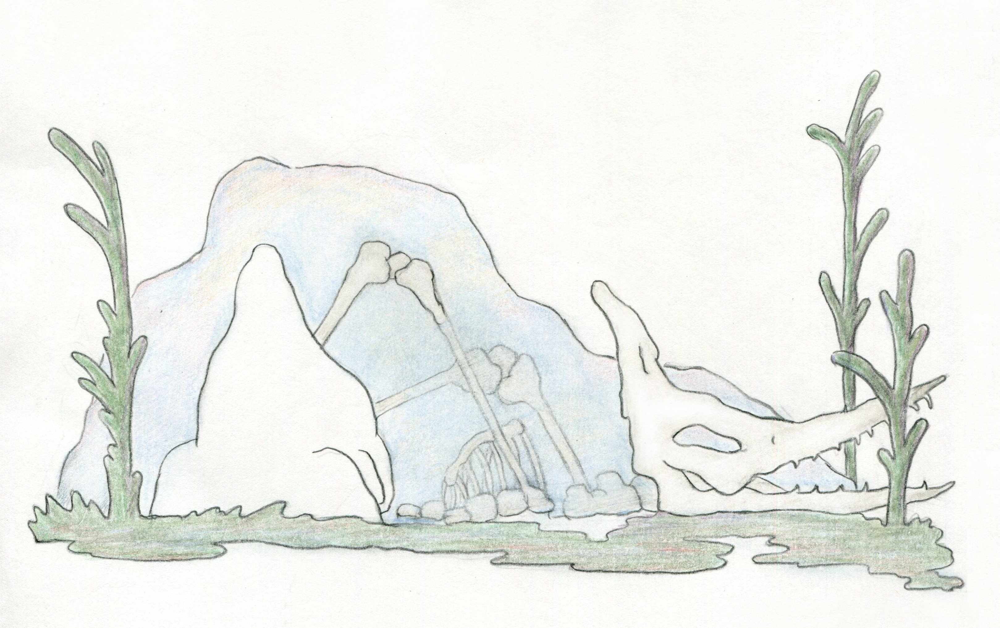
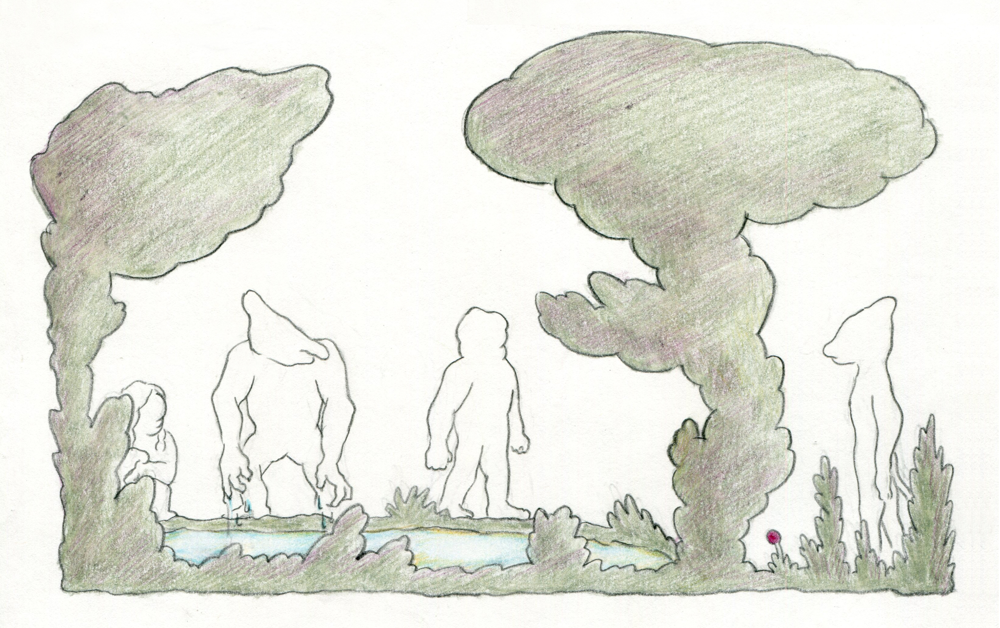
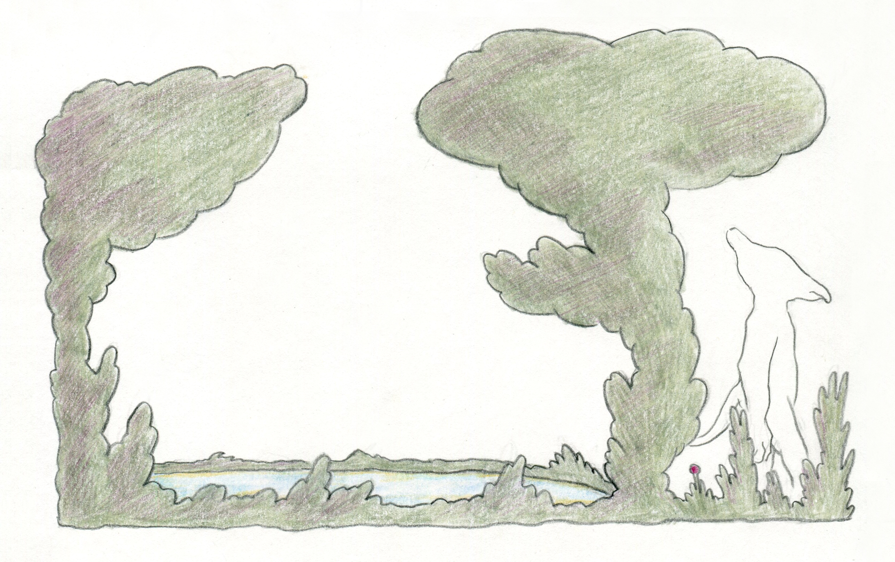

puuush.net
一只伊塔洛·卡尔维诺写的
恐龙
，关于它的故事。







起立(Qiliq)：从事设计，漫画与出版。独立漫画出版社O.Q Comics的Q。
puuush
·
恐龙(The Dinosaur) by 起立(Qiliq)
Avre Tu Puerta Carrada — Uri Gincel Trio
South — Bugge Wesseltoft
Sidonie — Don Ellis
Swanee River — Rhee yeu Seuk Guitar Orchestra